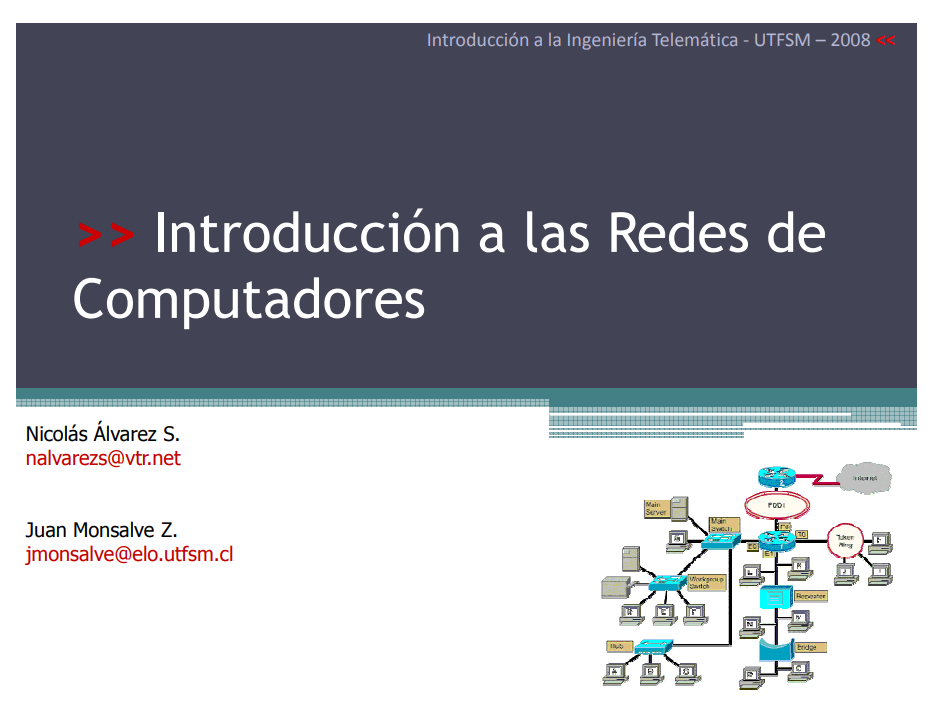
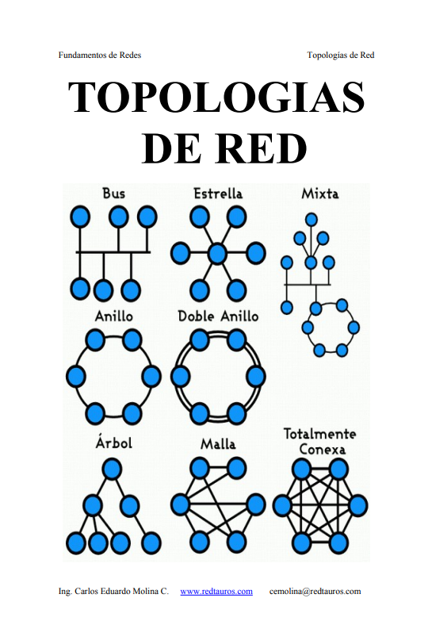
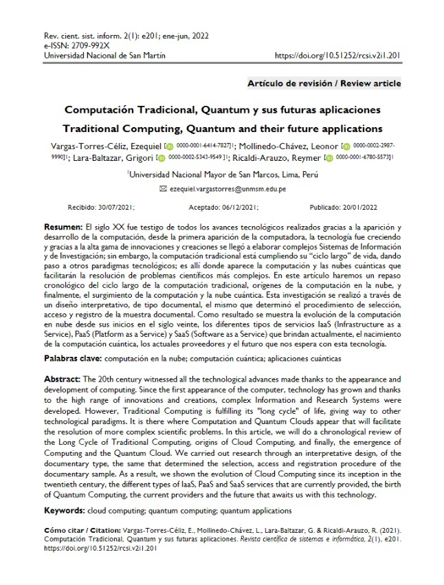
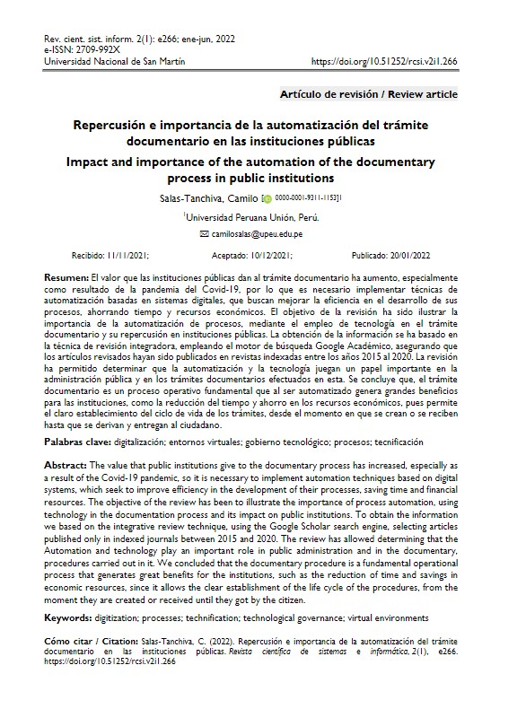
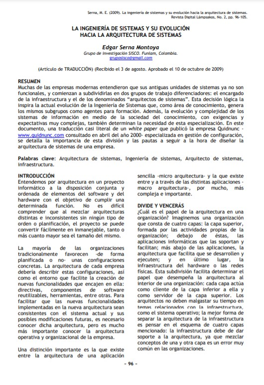
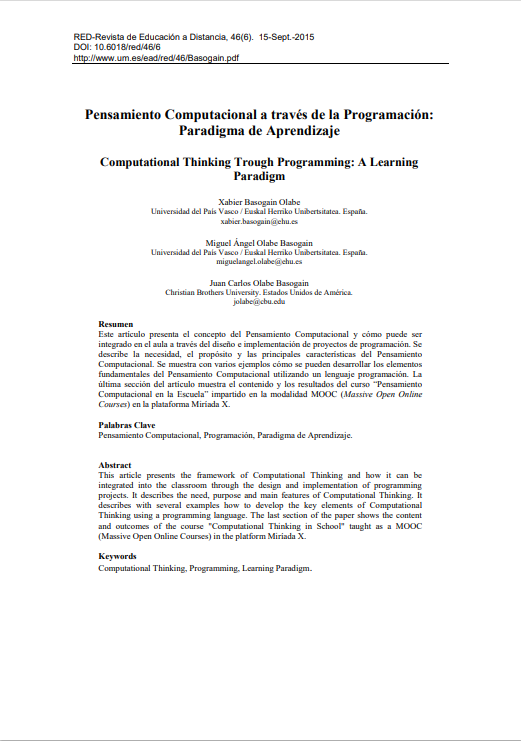
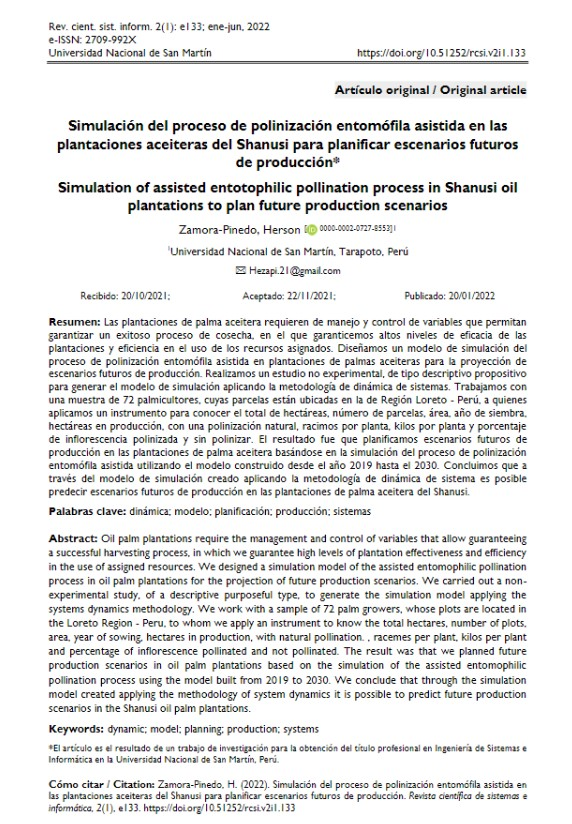

Introducción a las Redes de Computadores
Autor: Nicolás Álvarez S. | Juan Monsalve Z.
 Descripción:
Descripción:
Las redes han evolucionado de manera exponencial en las últimas décadas. Las redes utilizadas en casas y pequeñas oficinas se denominan LAN. Cada dispositivo de red cumple una misión >> Introducción a las Redes de Computadores específica. Para comunicarse, los computadores y dispositivos de red utilizan protocolos. Para las LAN, se utilizan los protocolos Ethernet e IP. Su función es compartir información en paquetes de datos. Los mismos se transmiten mediante impulsos eléctricos, ondas electromagnéticas u otros medios, empleando una codificación especial. Para ello el sistema traduce a un mismo idioma los procesos de las distintas computadoras, a través de una serie de estándares de comunicación.

Topologias de Red
Autor: Ing. Carlos Eduardo Molina C.
Descripción:
La topología de red es la disposición física en la que se conecta una red de ordenadores. Si una red tiene diversas topologías se la llama mixta. Topología de red en la que las estaciones se conectan formando un anillo. Cada estación está conectada a la siguiente y la última está conectada a la primera. Cada estación tiene un receptor y un transmisor que hace la función de repetidor, pasando la señal a la siguiente estación del anillo. En la topología de la red de bus, cada estación de trabajo está conectada a un cable principal llamado bus. Por lo tanto, en efecto, cada estación de trabajo está conectada directamente a cada otra estación de trabajo de la red. En la topología de red en estrella, hay un ordenador central o servidor al que todas las estaciones de trabajo están conectadas directamente. Cada estación de trabajo está indirectamente conectada entre sí a través de la computadora central.

Computación Tradicional, Quantum y sus futuras aplicaciones
Autor: Vargas-Torres-Céliz, Ezequiel
Descripción:
El siglo XX fue testigo de todos los avances tecnológicos realizados gracias a la aparición y desarrollo de la computación, desde la primera aparición de la computadora, la tecnología fue creciendo y gracias a la alta gama de innovaciones y creaciones se llegó a elaborar complejos Sistemas de Información y de Investigación; sin embargo, la computación tradicional está cumpliendo su “ciclo largo” de vida, dando paso a otros paradigmas tecnológicos; es allí donde aparece la computación y las nubes cuánticas que facilitarán la resolución de problemas científicos más complejos. En este artículo haremos un repaso cronológico del ciclo largo de la computación tradicional, orígenes de la computación en la nube, y finalmente, el surgimiento de la computación y la nube cuántica.

Repercusión e importancia de la automatización del trámite documentario en
las instituciones públicas
Autor: Salas-Tanchiva, Camilo
Descripción:
El valor que las instituciones públicas dan al trámite documentario ha aumento, especialmente como resultado de la pandemia del Covid-19, por lo que es necesario implementar técnicas de automatización basadas en sistemas digitales, que buscan mejorar la eficiencia en el desarrollo de sus procesos, ahorrando tiempo y recursos económicos. El objetivo de la revisión ha sido ilustrar la importancia de la automatización de procesos, mediante el empleo de tecnología en el trámite documentario y su repercusión en instituciones públicas. La obtención de la información se ha basado en la técnica de revisión integradora, empleando el motor de búsqueda Google Académico.

La ingeniería de sistemas y su evolución hacia la arquitectura de
sistemas
Autor: Xabier Basogain Olabe | Miguel Ángel Olabe Basogain
Descripción:
Muchas de las empresas modernas entendieron que sus antiguas unidades de sistemas ya no son funcionales, y comienzan a subdividirlas en dos grupos de trabajo diferenciadores: el encargado de la infraestructura y el de los denominados “arquitectos de sistemas”. Esta decisión lógica la inspira la actual evolución de la Ingeniería de Sistemas que, como área de conocimiento, genera los mismos subgrupos como agentes para formación. Además, la evolución y complejidad de los sistemas de información en medio de la sociedad del conocimiento, con exigencias y expectativas muy complejas, también determinan la necesidad de esta especialización. En este documento, una traducción casi literal de un white paper que publicó la empresa Quidnunc especializada en gestión de configuración, se detalla la importancia de esta división y las pautas a seguir a la hora de diseñar la arquitectura de sistemas de una empresa.

Pensamiento Computacional a través de la Programación: Paradigma de
Aprendizaje
Autor: Xabier Basogain Olabe | Miguel Ángel Olabe Basogain
Descripción:
Este artículo presenta el concepto del Pensamiento Computacional y cómo puede ser integrado en el aula a través del diseño e implementación de proyectos de programación. Se describe la necesidad, el propósito y las principales características del Pensamiento Computacional. Se muestra con varios ejemplos cómo se pueden desarrollar los elementos fundamentales del Pensamiento Computacional utilizando un lenguaje programación. La última sección del artículo muestra el contenido y los resultados del curso “Pensamiento Computacional en la Escuela” impartido en la modalidad MOOC (Massive Open Online Courses) en la plataforma Miríada X

Simulación del proceso de polinización entomófila asistida en las
plantaciones aceiteras del Shanusi para planificar escenarios futuros de
producción
Autor: Herson Zamora-Pinedo
Descripción:
Las plantaciones de palma aceitera requieren de manejo y control de variables que permitan garantizar un exitoso proceso de cosecha, en el que se garantice altos niveles de eficacia de las plantaciones y eficiencia en el uso de los recursos asignados. Diseñamos un modelo de simulación del proceso de polinización entomófila asistida en plantaciones de palmas aceiteras para la proyección de escenarios futuros de producción. Realizamos un estudio no experimental, de tipo descriptivo propositivo para generar el modelo de simulación aplicando la metodología de dinámica de sistemas. Trabajamos con una muestra de 72 palmicultores, cuyas parcelas están ubicadas en la de Región Loreto - Perú, a quienes aplicamos un instrumento para conocer el total de hectáreas, número de parcelas, área, año de siembra, hectáreas en producción.